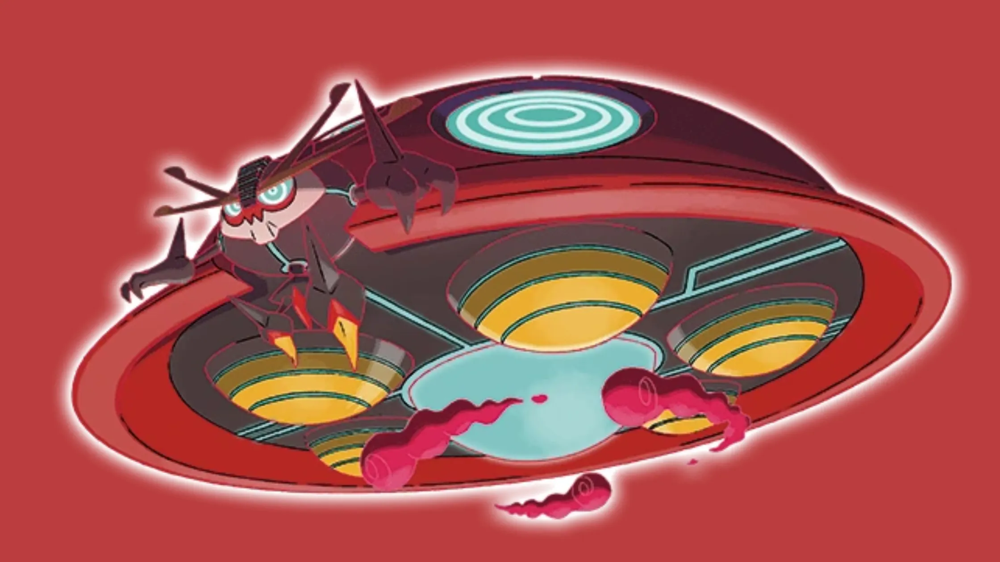
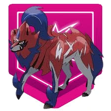

<!--<!doctype html>
<html lang="en">
<head>
  <meta charset="utf-8" />
  <meta name="viewport" content="width=device-width, initial-scale=1" />
  <title>Gigantamax Orbeetle Raid Guide — Best Counters, Teams & Strategy | Pokémon Gaming</title>
  <meta name="description" content="Gigantamax Orbeetle raid guide for Pokémon GO — weaknesses, top counters, recommended teams, move analysis, weather tips, player counts and FAQ. Complete, playable strategies for trainers of all levels." />
  <link rel="canonical" href="https://pokemongaming.in/gigantamax-orbeetle-raid-guide.html" />
  <style>
    /* Minimal in-article styles — adapt to your site CSS */
    body { font-family: Inter, system-ui, -apple-system, "Segoe UI", Roboto, "Helvetica Neue", Arial; color:#222; line-height:1.6; padding:18px; }
    .lead { font-size:1.05rem; margin-bottom:1em; color:#2b2b2b; }
    h1 { font-size:1.8rem; margin-bottom:0.25rem; }
    h2 { margin-top:1.1rem; margin-bottom:0.5rem; font-size:1.25rem; }
    h3 { margin-top:0.85rem; margin-bottom:0.4rem; font-size:1.05rem; }
    table { border-collapse:collapse; width:100%; margin:12px 0; }
    th, td { border:1px solid #e8e8e8; padding:10px 12px; text-align:left; vertical-align:top; }
    th { background:#fafafa; font-weight:700; }
    .note { background:#fff8e6; padding:10px; border-left:4px solid #ffb74d; margin:12px 0; }
    .pro-tip { background:#e8f8f1; padding:10px; border-left:4px solid #48c78e; margin:12px 0; }
    .author-box { border-top:1px solid #eee; padding-top:14px; margin-top:20px; display:flex; gap:12px; align-items:center; }
    .author-box img { width:56px; height:56px; border-radius:50%; object-fit:cover; }
    .small { font-size:0.92rem; color:#666; }
    ol, ul { margin-left:1.1rem; margin-bottom:1rem; }
    .cta { display:inline-block; padding:8px 12px; background:#2f855a; color:white; border-radius:6px; text-decoration:none; }
    .faq q { font-style:italic; }
    pre.code { background:#f4f4f4; padding:12px; overflow:auto; }
  </style>
</head>
<body>
<article>
  <header>
    <h1>Gigantamax Orbeetle Raid Guide — Best Counters, Teams & Strategy</h1>
    <p class="lead">Gigantamax Orbeetle is a bulky Bug/Psychic raid boss with unusual defensive profile and a surprisingly large HP pool when Gigantamaxed. This guide walks you through its weaknesses, reliable counters, sample teams, moveset analysis, weather interactions, and practical tactics so your raid group clears efficiently. Written in a gaming-blog tone and optimized for quick action — print the quick-check tables before you head out.</p>
    <p class="small">Last updated: <strong>October 27, 2025</strong></p>
  </header>

  <section>
    <h2>Gigantamax Orbeetle — Quick Overview</h2>
    <p>Gigantamax Orbeetle keeps the Bug/Psychic identity but with much higher HP and slightly increased defensive presence. Expect charged Psychic moves (e.g., Psyshock/Psychic) and high-damage Bug options (e.g., Bug Buzz). Because of this dual typing, Orbeetle is commonly vulnerable to Fire, Flying, Ghost and Dark (situational) but resists Fighting and Psychic to some extent. Your goal: pick counters that deal *consistent super-effective damage* while surviving big psychic or bug nukes.</p>
    <p class="pro-tip"><strong>Pro tip:</strong> Gigantamax bosses reward sustained DPS and correct typing — bring high-DPS counters with decent bulk and coordinate Megas if you have them.</p>
  </section>

  <section>
    <h2>Weakness & Type Chart</h2>
    <table aria-label="Weakness chart">
      <thead>
        <tr><th>Type</th><th>Effect vs Gigantamax Orbeetle</th></tr>
      </thead>
      <tbody>
        <tr><td>Fire</td><td>Super effective (×1.6) — top consistent counter type against Bug.</td></tr>
        <tr><td>Flying</td><td>Super effective (×1.6) — excellent coverage vs Bug.</td></tr>
        <tr><td>Ghost</td><td>Super effective (×1.6) — great if Orbeetle carries Psychic moves.</td></tr>
        <tr><td>Dark</td><td>Neutral to super depending on moves — useful vs Psychic variants.</td></tr>
        <tr><td>Rock</td><td>Neutral — not a top choice.</td></tr>
        <tr><td>Bug / Psychic / Fighting</td><td>Resisted or neutral — avoid as main counters.</td></tr>
      </tbody>
    </table>
    <p class="note">Note: Ghost and Dark exchanges are particularly valuable if Orbeetle runs heavy Psychic coverage (e.g., Psyshock, Psychic). Fire and Flying remain the safest bulk of counters for most scenarios.</p>
  </section>

  <section>
    <h2>Top Counters — Ranked List</h2>
    <p>Ranked counters below prioritize DPS, availability and survivability for Gigantamax HP pools.</p>
    <table aria-label="Best counters list">
      <thead>
        <tr><th>Rank</th><th>Pokémon</th><th>Recommended Moveset</th><th>Why</th></tr>
      </thead>
      <tbody>
        <tr><td>1</td><td>Ho-Oh</td><td>Incinerate / Sacred Fire</td><td>Top Flying/Fire hybrid — excellent DPS and survivability vs Bug/Psychic.</td></tr>
        <tr><td>2</td><td>Reshiram</td><td>Fire Fang / Overheat</td><td>High Fire DPS — tears through Bug typing quickly.</td></tr>
        <tr><td>3</td><td>Galarian Moltres</td><td>Fire Spin / Incinerate variants</td><td>Fire/Flying mix that performs very well vs Orbeetle.</td></tr>
        <tr><td>4</td><td>Chandelure</td><td>Fire Spin / Overheat</td><td>Glass-cannon Fire DPS for players without legendaries.</td></tr>
        <tr><td>5</td><td>Mewtwo (Shadow or regular)</td><td>Psycho Cut / Psystrike (or Shadow Ball if using Ghost)</td><td>High DPS and flexible — use Ghost coverage if boss runs Psychic moves.</td></tr>
        <tr><td>6</td><td>Gengar</td><td>Shadow Claw / Shadow Ball</td><td>Top Ghost glass-cannon; dangerous but effective if you can avoid quick fainting.</td></tr>
        <tr><td>7</td><td>Talonflame</td><td>Incinerate / Brave Bird</td><td>Fast Flying DPS and energy gain — good value attacker.</td></tr>
        <tr><td>8</td><td>Heatran</td><td>Fire Spin / Flamethrower</td><td>Bulky Fire option with strong STAB and better survivability than glass-cannons.</td></tr>
        <tr><td>9</td><td>Salamence</td><td>Fire Fang / Draco Meteor (if Fire available)</td><td>Flying coverage with decent DPS for teams lacking legendaries.</td></tr>
        <tr><td>10</td><td>Houndoom (Mega/Shadow)</td><td>Snarl / Foul Play / Flamethrower variants</td><td>Dark/Fire options that cover both typings where appropriate.</td></tr>
      </tbody>
    </table>
    <p class="small">Tip: If your roster lacks legendaries, combine accessible Fire and Flying attackers (Talonflame, Charizard with Blast Burn if available, Heatran) to maintain steady DPS.</p>
  </section>

  <section>
    <h2>Moveset Mapping — Pick Counters by Charged Move</h2>
    <p>Common charged moves you may see and optimal counter types.</p>
    <table aria-label="Moveset to counter mapping">
      <thead>
        <tr><th>Orbeetle Charged Move</th><th>Primary Counter Type</th><th>Recommended Pokémon</th></tr>
      </thead>
      <tbody>
        <tr><td>Bug Buzz / Psychic</td><td>Fire / Ghost</td><td>Reshiram, Ho-Oh, Gengar</td></tr>
        <tr><td>Signal Beam / Psyshock</td><td>Fire / Ghost</td><td>Heatran, Talonflame, Mewtwo (Ghost moves)</td></tr>
        <tr><td>Hurricane (if present) / Bug Buzz</td><td>Rock / Fire / Flying</td><td>Ho-Oh, Talonflame, Reshiram</td></tr>
        <tr><td>Confusion / Psychic</td><td>Ghost / Dark</td><td>Gengar, Tyranitar (Dark), Houndoom</td></tr>
      </tbody>
    </table>
    <p class="note">If Orbeetle shows Psychic-first moves, favor Ghost/Dark counters to exploit the Psychic weakness. If its bug moves dominate, Fire & Flying will consistently perform best.</p>
  </section>

  <section>
    <h2>How Many Players Are Needed?</h2>
    <table aria-label="players-needed">
      <thead>
        <tr><th>Team Quality</th><th>Players Required (Approx.)</th><th>Notes</th></tr>
      </thead>
      <tbody>
        <tr><td>Elite meta teams (legendaries + Megas)</td><td>2–3</td><td>With optimal DPS and weather boosts, quick clears are possible.</td></tr>
        <tr><td>Strong players with solid counters</td><td>3–5</td><td>Most common local raid group size.</td></tr>
        <tr><td>Mixed/casual players</td><td>6–8</td><td>Bring extra Fire/Flying to compensate for lower IVs or levels.</td></tr>
      </tbody>
    </table>
    <p class="note">Gigantamax HP pools are bigger — if the lobby fills with poor counters, the required number grows quickly. Encourage players to bring Fire/Flying/Ghost to speed the fight.</p>
  </section>

  <section>
    <h2>Sample Party Builds (Practical Setups)</h2>
    <p>Practical teams depending on what you own — listed by swap priority.</p>

    <h3>Meta Party (2–3 players)</h3>
    <ol>
      <li>Ho-Oh (Incinerate / Sacred Fire)</li>
      <li>Reshiram (Fire Fang / Overheat)</li>
      <li>Mewtwo (Psycho Cut / Psystrike or Shadow Ball)</li>
      <li>Heatran (Fire Spin / Flamethrower)</li>
      <li>Gengar (Shadow Claw / Shadow Ball)</li>
    </ol>

    <h3>Balanced Group (3–5 players)</h3>
    <ol>
      <li>Talonflame (Incinerate / Brave Bird)</li>
      <li>Charizard (Blast Burn) or Galarian Moltres</li>
      <li>Chandelure (Overheat)</li>
      <li>Mewtwo</li>
      <li>Heatran or Houndoom</li>
    </ol>

    <h3>Beginner / Casual Group (6–8 players)</h3>
    <ol>
      <li>High-level Fire attackers (Charizard, Chandelure)</li>
      <li>Reliable Flying attackers (Talonflame, Salamence)</li>
      <li>One or two Ghost counters if Psychic appears</li>
    </ol>
  </section>

  <section>
    <h2>Battle Strategy — Step by Step</h2>
    <ol>
      <li><strong>Preview the charged move</strong> before the fight and select Ghost counters if Psychic appears; otherwise default to Fire/Flying.</li>
      <li><strong>Lead with your highest DPS Fire/Flying</strong> to maximize early damage on the Gigantamax HP pool.</li>
      <li><strong>Save shields</strong> in small groups for heavy Psychic or Bug nukes that would otherwise wipe your main DPS.</li>
      <li><strong>Use Megas</strong> that directly boost Fire or Flying damage (e.g., Mega Charizard Y styles) to shorten the fight.</li>
      <li><strong>Rotate in Ghost counters</strong> if Orbeetle uses multiple Psychic attacks — Ghost types can turn the tide quickly.</li>
      <li><strong>Communicate revives & swaps</strong> — stagger revives so your team maintains pressure and doesn’t faint together on the next charged move.</li>
    </ol>
    <p class="pro-tip">Against mixed movesets, a balanced team (2 Fire, 1 Flying, 1 Ghost) offers flexibility to handle any preview your raid shows.</p>
  </section>

  <section>
    <h2>IV / Level & Resource Advice</h2>
    <p>Prioritize powering a small set of top counters (Ho-Oh, Reshiram, Heatran) rather than many mediocre ones. For accessibility, invest in a couple of Talonflame/Charizard Blast Burn users and a Chandelure if you lack legendaries — they perform solidly for stardust cost.</p>
  </section>

  <section>
    <h2>Weather Effects & Their Impact</h2>
    <ul>
      <li><strong>Sunny/Clear</strong> — boosts Fire attackers (ideal).</li>
      <li><strong>Windy</strong> — boosts Flying (good if you rely on Talonflame/Ho-Oh).</li>
      <li><strong>Partly Cloudy</strong> — neutral to slight benefit for some counters.</li>
      <li><strong>Rain</strong> — can boost certain moves but usually makes the raid harder for Fire-heavy teams.</li>
    </ul>
    <p class="small">Prefer Sunny or Windy boost when possible — both materially reduce the number of players required and shorten clears.</p>
  </section>

  <section>
    <h2>Common Mistakes to Avoid</h2>
    <ul>
      <li>Bringing teams full of Psychic or Bug attackers — Orbeetle resists these and the fight drags.</li>
      <li>Ignoring charged move preview — switching strategy after the first nuke is a common and costly mistake.</li>
      <li>Wasting shields early in small groups — save at least one shield for a late heavy hit.</li>
    </ul>
  </section>

  <section>
    <h2>Related Guides</h2>
    <ul>
      <li><a href="/mega-charizard-x-raid-guide.html">Mega Charizard X Raid Guide</a></li>
      <li><a href="/mega-metagross-raid-guide.html">Mega Metagross Raid Guide</a></li>
      <li><a href="/gigantamax-venusaur-raid-guide.html">Gigantamax Venusaur Raid Guide</a></li>
    </ul>
  </section>

  <section>
    <h2>Frequently Asked Questions (FAQ)</h2>
    <div class="faq">
      <h3>Q: <q>Is Gigantamax Orbeetle weak to Fire?</q></h3>
      <p>A: Yes — Fire is one of the most consistent and reliable weaknesses. High-DPS Fire attackers will shorten the fight significantly.</p>

      <h3>Q: <q>Can I solo Gigantamax Orbeetle?</q></h3>
      <p>A: Soloing a Gigantamax boss is very difficult due to the large HP pool. Only top-tier trainers with multiple maxed legendaries and perfect weather might pull it off. Small groups of 2–3 with strong counters are realistic.</p>

      <h3>Q: <q>Which Mega is best to bring?</q></h3>
      <p>A: Bring a Mega that boosts Fire or Flying damage if available (e.g., Mega Charizard Y-style). The right Mega makes a huge difference on Gigantamax HP pools.</p>

      <h3>Q: <q>What if Orbeetle uses Psyshock/Psychic?</q></h3>
      <p>A: Switch in Ghost or Dark counters (Gengar, Mewtwo with Ghost moves, Houndoom) to exploit Psychic weakness and mitigate damage windows.</p>

      <h3>Q: <q>Should I TM my Pokémon for this raid?</q></h3>
      <p>A: If you frequently raid against Bug/Psychic bosses, wording TMs into Overheat, Brave Bird or Shadow Ball (for Ghost counters) is useful long-term for raid efficiency.</p>
    </div>
  </section>

  <footer>
    <div class="author-box">
      
      <div>
        <strong>Written by Abhishek</strong>
        <p class="small">Pokémon GO Trainer & Guide Writer. I test teams in real raids and update guides with the latest raid data to keep these pages accurate.</p>
        <p class="small">Want more guides? <a class="cta" href="/guides.html">See all guides</a></p>
      </div>
    </div>

    <p class="small" style="margin-top:12px;">Disclaimer: Pokémon, Pokémon GO and related trademarks are the property of Nintendo / The Pokémon Company. This guide is fan-created and not affiliated with the official owners.</p>
  </footer>

  <!-- FAQ schema (JSON-LD) -->
  <script type="application/ld+json">
  {
    "@context": "https://schema.org",
    "@type": "FAQPage",
    "mainEntity": [
      {
        "@type": "Question",
        "name": "Is Gigantamax Orbeetle weak to Fire?",
        "acceptedAnswer": {
          "@type": "Answer",
          "text": "Yes — Fire is one of the most consistent and reliable weaknesses. High-DPS Fire attackers will shorten the fight significantly."
        }
      },
      {
        "@type": "Question",
        "name": "Can I solo Gigantamax Orbeetle?",
        "acceptedAnswer": {
          "@type": "Answer",
          "text": "Soloing a Gigantamax boss is very difficult due to the large HP pool. Only top-tier trainers with multiple maxed legendaries and perfect weather might pull it off."
        }
      },
      {
        "@type": "Question",
        "name": "Which Mega is best to bring?",
        "acceptedAnswer": {
          "@type": "Answer",
          "text": "Bring a Mega that boosts Fire or Flying damage if available (e.g., Mega Charizard Y-style). The right Mega makes a huge difference on Gigantamax HP pools."
        }
      }
    ]
  }
  </script>
</article>
</body>
</html>
-->

<!DOCTYPE html>
<html lang="en">
<head>
  <meta charset="utf-8" />
  <title>Gigantamax Orbeetle Raid Guide — Counters, Moves & Strategy | Pokémon GO</title>
  <meta name="viewport" content="width=device-width,initial-scale=1" />
  <meta name="description" content="Complete Gigantamax Orbeetle raid guide for Pokémon GO — weaknesses, best Gigantamax & Dynamax counters, movesets, weather tips, recommended lobby sizes, rewards and battle strategy." />
  <meta name="robots" content="index, follow" />
  <link rel="stylesheet" href="posts.css"/>

<meta property="og:title" content="Gigantamax Orbeetle Raid Guide — Counters, Moves & Strategy">
  <meta property="og:description" content="Defeat Gigantamax Orbeetle in Pokémon GO raids: learn its weaknesses, best Gigantamax and Dynamax counters, moveset warnings, weather interactions, and catch tips.">
  <meta property="og:type" content="article">
  <meta property="og:url" content="https://pokemongaming.in/raids/gigantamax_orbeetle.html">
  <meta property="og:image" content="https://pokemongaming.in/raids/images/gigantamax_orbeetle_cover.webp">

</head>
<body>
 
    <section class="hero" aria-labelledby="hero-h">

<header>
  <h1>Gigantamax Orbeetle — Raid Guide</h1>
</header>


      
    </section>

    <div class="grid" style="margin-top:14px">
      <article class="card" id="guide">
        <h2>Quick summary</h2>
        <div class="kvs" aria-hidden="false">
<div><strong>Species:</strong> Orbeetle (Gigantamax)</div>
          <div><strong>Type:</strong> Bug / Psychic </div>
          <div><strong>Primary weaknesses:</strong> Fire, Flying, Ghost, Dark, Bug, Rock</div>
          <div><strong>Recommended lobby:</strong> 15-20 trainers</div>
                 </div>
<hr style="border: 0; height: 2px; background-color: red; margin: 20px 0;">


         <h2 id="what-is">Introduction</h2>
        <p class="note">

          Gigantamax Orbeetle is a Bug/Psychic-type Pokémon in Pokémon GO raids. Known for its unique UFO-inspired design and massive Gigantamax form, Orbeetle can be a tricky raid boss due to its dual typing. This guide explains everything trainers need to beat Gigantamax Orbeetle reliably in Pokémon GO raids — from weaknesses and recommended Gigantamax counters to Dynamax picks, weather interactions, team-size guidance, and catch/reward tips.
   </p>
<hr style="border: 0; height: 2px; background-color: red; margin: 20px 0;">


        <h2 id="weaknesses">Weaknesses & resistances</h2>
        <div class="tbl" aria-label="Weaknesses table">
          <table>
            <thead><tr><th>Category</th><th>Details</th></tr></thead>
            <tbody>
              <tr>
                <td><strong>Weak to</strong></td>
                <td>
                   Fire •
                   Flying
                    Ghost •
                   Dark
                   Bug •
                   Rock

                </td>
              </tr>
              <tr>
                <td><strong>Resists</strong></td>
                <td>
                   Grass •
                   Ground •
                   Psychic •
                   Fighting
</td>
              </tr>
              <tr>
                <td><strong>Notes</strong></td>
                <td>Gigantamax bosses often use Max Moves — these can be powerful, sometimes buffing or changing battlefield conditions. Expect higher HP and potentially team-wide effects.</td>
              </tr>
            </tbody>
          </table>
<hr style="border: 0; height: 2px; background-color: red; margin: 20px 0;">

        </div>

     <h2>Best Gigantamax Orbeetle Counters</h2>
  <h3>Gigantamax-type Counters</h3>
  <ul>
    <li><strong>Charizard</strong> </li>
    <li><strong>Gengar</strong> </li>
  </ul>

  <h3>Dynamax-type Counters</h3>
  <ul>
    <li><strong>Corviknight</strong> </li>
    <li><strong>Cinderace</strong></li>
    <li><strong>Darmanitan</strong> </li>
    <li><strong>Charizard</strong> </li>
    <li><strong>Moltres</strong> </li>
    <li><strong>Entei</strong> </li>
  </ul>

<hr style="border: 0; height: 2px; background-color: red; margin: 20px 0;">

<h2>Best Gigantamax Counters</h2>
      <p>Gigantamax Pokémon that amplify the right types give you a powerful edge. Below are top Gigantamax counters with short notes on why they excel vs G-Max Orbeetle.</p>


         <div class="tbl" aria-label="Gigantamax Counters table">
          <table>
            <thead>
              <tr>
                <th>Pokémon</th>
                <th>Fast Moves</th>
                <th>Gigantamax Moves</th>
                <th>Charged Moves</th>
                <th>Elite Moves</th>
                <th>Best Moves</th>
              </tr>
            </thead>
            <tbody>

           <tr>
              <td>
               <!-- <div class="poke-cell">
                <strong>--> Gigantamax Charizard <!--</strong></div>-->

                </td>
                <td>Air Slash, Fire Spin</td>
                 <td>G-Max Wildfire</td>
          <td>Overheat, Fire Blast, Dragon Claw</td>
          <td>Dragon Breath, Ember, Wing Attack, Flamethrower, Blast Burn</td>
          <td>Fire Spin(13) and G-Max Wildfire(350)</td>
              </tr>


              <tr>
              <td>
               <!-- <div class="poke-cell">
                  <strong>--> Gigantamax Snorlax <!--</strong></div>-->

                </td>
                <td>Lick, Zen Headbutt</td>
                <td>G-Max Replenish</td>
                <td>Heavy Slam, Earthquake, Hyper Beam, Outrage, Skull Bash, Body Slam, Superpower</td>
<td>Yawn</td>
                <td>Zen Headbutt(11) and G-Max Replenish(350)</td>
              </tr>


    <tr>
              <td>
                <!--<div class="poke-cell">
                <strong>--> Gigantamax Cinderace<!--</strong></div>-->

                <td>Tackle, Fire Spin</td>
                <td>G-Max Fireball</td>
                <td>Flamethrower, Flame Charge, Focus Blast</td>
                <td>-</td>
<td>Fire Spin(13) and G-Max Fireball(350)</td>
              </tr>


              <tr>
                <td>
              <!--<div class="poke-cell">
                <strong>-->Gigantamax Lapras<!--</strong></div>-->
                </td>
                <td>Frost Breath, Water Gun, Psywave</td>
                <td>G-Max Resonance</td>
                <td>Blizzard, Hydro Pump, Surf, Skull Bash, Sparkling Aria</td>
<td>Ice Shard, Ice Beam, Dragon Pulse</td>
<td>Frost Breath(11) and G-Max Resonance(350)</td>

              </tr>


<tr>
              <td>
         <!--   <div class="poke-cell">
              <strong>-->Gigantamax Blastoise<!--</strong></div>-->
              </td>
              <td>Bite, Water Gun, Rollout</td>
              <td>G-Max Cannonade</td>
              <td>Flash Cannon, Ice Beam, Hydro Pump, Skull Bash</td>
<td>Hydro Cannon</td>
<td>Rollout(15) and G-Max Cannonade(350)</td>
            </tr>

            <tr>
              <td>
                <!--<div class="poke-cell">
                <strong>--> Gigantamax Gengar<!--</strong></div>-->

                </td>
                <td>Sucker Punch, Shadow Claw, Hex</td>
                <td>G-Max Terror</td>
                <td>Shadow Ball, Sludge Bomb, Focus Blast, Drain Punch</td>
                <td>Lick, Dark Pulse, Shadow Punch, Sludge Wave, Psychic</td>
<td>Hex(8) and G-Max Terror(350)</td>
              </tr>


             <tr>
              <td>
               <!-- <div class="poke-cell">
                <strong>--> Gigantamax Kingler<!--</strong></div>-->

                </td>
                <td>Metal Claw, Bubble</td>
                <td>G-Max Foam Burst</td>
<td>Vise Grip, X-Scissor, Water Pulse, Crabhammer, Razor Shell</td>
                <td>Mud Shot</td>
                <td>Bubble(10) and G-Max Foam Burst(350)</td>
              </tr>


            </tbody>
          </table>
<hr style="border: 0; height: 2px; background-color: red; margin: 20px 0;">

        </div>

<h2>Dynamax & Support Picks</h2>
      <p>Not every raid group will have multiple Gigantamax picks. Dynamax Pokémon make excellent support, either by adding burst damage or soaking time during G-Max residual windows.</p>


       <div class="tbl" aria-label="Dynamax Counters table">
          <table>
            <thead>
              <tr>
                <th>Pokémon</th>
                <th>Dynamax Moves</th>
                <th>Fast Moves</th>
                <th>Charged Moves</th>
                <th>Elite Moves</th>
              </tr>
            </thead>
            <tbody>

<tr>
              <td>
              <!--  <div class="poke-cell">
                <strong>--> Dynamax Omastar<!--</strong></div>-->

                </td>
                <td>Max Quake, Max Geyser, Max Rockfall</td>
                <td>Mud Shot, Water Gun</td>
          <td>Ancient Power, Hydro Pump, Rock Blast</td>
                <td>Rock Throw, Rock Slide</td>
              </tr>

<tr>
<td>
             <!-- <div class="poke-cell"><strong>-->Dynamax Blastoise<!--</strong></div>-->
                </td>
                <td>Max Geyser, Max Darkness, Max Rockfall</td>
                <td>Bite, Water Gun, Rollout</td>
                <td>Flash Cannon, Ice Beam, Skull Bash</td>
<td>Hydro Cannon</td>
              </tr>

<tr>
              <td>
              <!--  <div class="poke-cell">
                <strong>--> Dynamax Moltres<!--</strong></div>-->

                </td>
                <td>Max Flare, Max Airstream</td>
          <td>Fire Spin, Wing Attack</td>
          <td>Fire Blast, Overheat, Heat Wave, Ancient Power</td>
                <td>Sky Attack</td>
              </tr>


 <tr>
             <td>
             <!-- <div class="poke-cell"><strong>-->Dynamax Entei<!--</strong></div>--></td>
               <td>Max Flare</td>
          <td> Fire Spin, Fire Fang</td>
          <td> Flamethrower, Fire Blast, Overheat, Iron Head, Flame Charge, Scorching Sands</td>
          <td> -</td>
            </tr>

<tr>
              <td>
              <!--  <div class="poke-cell">
                <strong>--> Eternatus<!--</strong></div>-->

                </td>
                <td> Dynamax Cannon</td>
          <td>Dragon Tail, Poison Jab</td>
          <td>Sludge Bomb, Dragon Pulse, Flamethrower</td>
          <td>-</td>
              </tr>

<tr>
              <td>
              <!--  <div class="poke-cell">
                <strong>--> Zamazenta<!--</strong></div>-->

                </td>
                <td>Behemoth Bash</td>
          <td>Metal Claw, Ice Fang</td>
          <td>Moonblast, Giga Impact, Close Combat</td>
                <td>-</td>
              </tr>


 <tr>
              <td>
             <!--   <div class="poke-cell">
                <strong>--> Dynamax Metagross<!--</strong></div>-->

                </td>
                <td>Max Mindstorm, Max Flutterby, Max Steelspike</td>
          <td> Zen Headbutt, Bullet Punch, Fury Cutter</td>
          <td> Flash Cannon, Psychic, Earthquake</td>
          <td> Meteor Mash</td>
              </tr>


<tr>
              <td>
              <!--  <div class="poke-cell">
                <strong>--> Dynamax Excadrill<!--</strong></div>-->

                </td>
                <td>Max Quake, Max Steelspike</td>
          <td>Metal Claw, Mud Slap, Mud Shot</td>
          <td>Rock Slide, Earthquake, Drill Run, Iron head, Scorching Sands</td>
          <td>-</td>
              </tr>


 <tr>
                <td>
             <!-- <div class="poke-cell">
                <strong>-->Dynamax Corviknight<!--</strong></div>-->
                </td>
                <td>Max Airstream, Max Steelspike, Max Quake</td>
                <td>Steel Wing, Air Slash, Sand Attack</td>
                <td>Sky Attack, Payback</td>
                <td>Air Cutter, Iron Head</td>
              </tr>


 <tr>
              <td>
             <!--   <div class="poke-cell">
                <strong>--> Zacian<!--</strong></div>-->

                </td>
                <td>Behemoth Blade</td>
          <td>Metal Claw, Air Slash</td>
          <td>Play Rough, Giga Impact, Close Combat</td>
<td>-</td>
              </tr>


  <tr>
              <td>
               <!-- <div class="poke-cell">
                <strong>--> Dynamax Zapdos<!--</strong></div>-->

                </td>
                <td>Max Lightning</td>
                <td>Charge Beam</td>
          <td>Zap Cannon, Thunder, Thunderbolt, Ancient Power, Drill Peck</td>
                <td>Thunder Shock</td>
              </tr>


 <tr>
                <td>
             <!-- <div class="poke-cell"><strong>-->Dynamax Charizard<!--</strong></div>--></td>               
               <td>Max Flare, Max Airstream, Max Wyrmwind</td>
                <td>Fire Spin, Air Slash</td>
                <td>Dragon Claw, Fire Blast, Overheat, Air Cutter</td>
<td>Ember, Wing Attack, Dragon Breath, Blast Burn, Flamethrower</td>
              </tr>


<tr>
              <td>
           <!--     <div class="poke-cell">
                <strong>--> Dynamax Darmanitan<!--</strong></div>-->

                </td>
                <td>Max Strike, Max Flare </td>
          <td> Tackle, Fire Fang, Incinerate</td>
          <td> Overheat, Focus Blast, Psychic, Rock Slide</td>
<td>-</td>
              </tr>


 <tr>
                <td>
             <!-- <div class="poke-cell">
               <strong>-->Dynamax Cinderace<!--</strong></div>-->
                </td>
                <td>Max Flare, Max Strike</td>
                <td>Tackle, Fire Spin</td>
                <td>Flame Charge, Flamethrower, Focus Blast</td>
<td>-</td>
              </tr>


 <tr>
               <td>
          <!--    <div class="poke-cell"><strong>-->Dynamax Unfezant<!--</strong></div>--></td>                
               <td>Max Airstream, Max Steelspike</td>
          <td>Air Slash, Steel Wing</td>
          <td>Heat Wave, Hyper Beam, Sky Attack</td>
          <td>-</td>
              </tr>


<tr>
              <td>
               <!-- <div class="poke-cell">
                <strong>--> Dynamax Raikou <!--</strong></div>-->

                </td>
                <td> Max Lightning</td>
          <td>Thunder Shock, Volt Switch</td>
          <td>Shadow Ball, Thunder, Thunderbolt, Wild Charge, Aura Sphere</td>
          <td>-</td>
              </tr>

<tr>
              <td>
              <!--  <div class="poke-cell">
                <strong>--> Dynamax Latios<!--</strong></div>-->

                </td>
                <td>Max Wyrmwind, Max Mindstorm</td>
          <td>Dragon Breath, Zen Headbutt</td>
          <td>Psychic, Solar Beam, Dragon Claw, Aura Sphere</td>
          <td>Luster Purge</td>
              </tr>

<tr>
              <td>
            <!--    <div class="poke-cell">
                <strong>--> Dynamax Latias<!--</strong></div>-->
                </td>
                <td>Max Wyrmwind, Max Mindstorm, Max Starfall</td>
          <td>Dragon Breath, Zen Headbutt, Charm</td>
          <td>Psychic, Thunder, Outrage, Aura Sphere</td>
<td>Mist Ball</td>

              </tr>


<tr>
                <td>
              <!--<div class="poke-cell"><strong>-->Dynamax Blissey<!--</strong></div>-->
                </td>
                 <td>Max Strike, Max Mindstorm</td>
          <td>Pound, Zen Headbutt</td>
          <td>Dazzling Gleam, Hyper Beam, Psychic</td>
          <td>Wild Charge</td>
              </tr>


<tr>
              <td>
             <!-- <div class="poke-cell"><strong>-->Dynamax Articuno<!--</strong></div>-->
                </td>
                <td>Max HailStorm</td>
                <td>Frost Breath, Ice Shard</td>
                <td>Blizzard, Ice Beam, Icy Wind, Ancient Power, Triple Axel</td>
<td>Hurricane</td>
            </tr>


 <tr>
                <td>
             <!-- <div class="poke-cell"><strong>-->Dynamax Greedent<!--</strong></div>--></td>
                <td>Max Strike, Max Darkness, Max Overgrowth, Max Quake</td>
          <td>Tackle, Bite, Bullet Seed, Mud Shot</td>
          <td>Body Slam, Crunch, Tailblaze</td>
          <td>-</td>
              </tr>


<tr>
              <td>
             <!--   <div class="poke-cell">
                <strong>--> Dynamax Gengar<!--</strong></div>-->

                </td>
                <td>Max Darkness, Max Phantasm</td>
                <td>Sucker Punch, Hex, Shadow Claw</td>
          <td>Focus Blast, Shadow Ball, Sludge Bomb, Drain Punch, Shadow Punch</td>
                <td>Lick, Psychic, Dark Pulse, Sludge Wave</td>
              </tr>

            </tbody>
          </table>
<hr style="border: 0; height: 2px; background-color: red; margin: 20px 0;">

        </div>

  <!--  <section class="ads card" aria-label="Advertisement">
      <ins class="adsbygoogle"
           style="display:block"
           data-ad-client="ca-pub-XXXXXXXXXXXXXX"
           data-ad-slot="2222222222"
           data-ad-format="in-article"
           data-full-width-responsive="true"></ins>
      <script>(adsbygoogle = window.adsbygoogle || []).push({});</script>
    </section>-->


<section class="grid two">
      <article class="card" id="moves">
        <h2>Moves & Threats</h2>
        <p>Orbeetle common fast moves are <strong>Confusion</strong> or <strong>Struggle Bug</strong>. Charged moves include <strong>Bug Buzz</strong> or <strong>Psychic</strong>. G-Max Gravitas not only delivers heavy damage but also leaves a damaging area for a short time — timing your swaps and using at least one bulky support reduces wipe risk.</p>
<hr style="border: 0; height: 2px; background-color: red; margin: 20px 0;">


 </article>
<aside class="card" id="cp">
        <h2>CP & IV (Catch)</h2>
        <ul>
          <li><strong>Perfect (L20):</strong> 1,203-1,270 CP</li>
          <li><strong>Weather Boost (L25):</strong> 1,504-1,588 CP</li>
          <li><span class="pill">Boosted by: <strong>Rainy</strong> & <strong>Windy</strong></span></li>
        </ul>
        <p class="note">Use Pinap on poor IVs; switch to Golden Razz on 96%+ or Shiny.</p>
<hr style="border: 0; height: 2px; background-color: red; margin: 20px 0;">

      </aside>
    </section>

    <section class="card" id="weather">
      <h2>Weather Effects</h2>
     <p><strong>Sunny weather:</strong> boosts <strong> Fire</strong> counters. <strong>Fog weather :</strong> boosts <strong> Dark and Ghost</strong> counters. <strong>Rainy weather :</strong> boosts <strong> Orbeetle Bug</strong> moves. <strong>Windy weather :</strong> boosts <strong> Orbeetle Psychic</strong> moves.</p>
<hr style="border: 0; height: 2px; background-color: red; margin: 20px 0;">

          </section>

<!--<p>Watch for Ice Beam, which punishes Grass-type counters heavily. Balance your team with Electric attackers.</p>

          <h2 id="tips">Practical battle tips</h2>
      <h2>Battle Tips</h2>
      <ul>
       <li>Front-load your best Electric/Grass DPS to capitalize on early damage windows.</li>
                   <li>Coordinate dodges only on heavy Max Moves — constant dodging reduces overall DPS in long fights.</li>
          <li>Star and favorite teams to reduce relobby time; players in large groups should communicate role.</li>
      </ul>-->

        <h2 id="team-size">Team Size</h2>
        <p>Recommended: <strong>15–20 trainers</strong> for comfortable clears with mixed player levels. With many Gigantamax / Dynamax counters, 10–14 can work. Under 8 trainers should be attempted only if all participants are high-level and coordinated with ideal counters and Dynamax/G-Max boosts.</p>

<hr style="border: 0; height: 2px; background-color: red; margin: 20px 0;">

 <h2>Why Raid Gigantamax Orbeetle?</h2>
  <p>Reasons include Pokédex entry, strong Bug / Psychic attacker, shiny chance, and XL Candy farming.</p>

<hr style="border: 0; height: 2px; background-color: red; margin: 20px 0;">

<!--<h2>When To Avoid</h3>
<p class="small">Avoid Ground, Fire, and Rock Pokémon — they take heavy damage from Orbeetle’s Water moves.</p>
 </p>-->

       <h2 id="catch">Raid Strategy & Catch Tips</h2>
        <p>
          Use a mix of Dark, Ghost, and Fire attackers for the best chance to take down Gigantamax Orbeetle quickly. Coordinating with friends will make the raid much easier.</p>
<hr style="border: 0; height: 2px; background-color: red; margin: 20px 0;">


        <section id="faq" aria-label="FAQ">
          <h2>FAQ</h2>
          <h3>What is Gigantamax Orbeetle type and weakness?</h3>
<p>Orbeetle is a Bug / Psychic type. It is weak to Flying, Rock, Bug, Ghost, Dark, Fire.</p>
<h3>What are good counters for G-Max Gravitas?</h3>
<p>Strong fire and dark attackers such as Gigantamax Charizard, Gigantamax Cinderace, Gigantamax Snorlax, Gigantamax Gengar, Dynamax Charizard, Dynamax Zapdos.</p>      
<h3>Can Gigantamax Orbeetle be shiny?</h3>
<p>Yes, but in certain events.</p>
<h3>Is Gigantamax Orbeetle catchable after the raid? </h3>
<p>Yes — standard raid catch mechanics apply.</p>
<h3>Does weather change move sets?</h3>
<p>Sunny weather boosts Fire counters, Fog weather boosts Dark and Ghost counters, Rainy weather boosts Orbeetle Bug moves, Windy weather boosts Orbeetle Psychic moves.</p>
<h3>Does Orbeetle keep G-Max Gravitas?</h3>
<p>No — it’s exclusive to Gigantamax raids.</p>
    <hr style="border: 0; height: 2px; background-color: red; margin: 20px 0;">

        </section>

<h2>Conclusion</h2>
      <p>Gigantamax Orbeetle is a mechanically interesting raid boss: its Bug/Psychic combo is predictable, but the G-Max residual damage forces teams to plan for survivability, not just pure DPS. Prioritize Fire and Dark Gigantamax picks, add Dynamax support for sustained windows, and include at least one high-TDO tank if your lobby is smaller. With the counters and tactics above, you’ll clear Orbeetle efficiently and maximize your rewards.</p>
<hr style="border: 0; height: 2px; background-color: red; margin: 20px 0;">


<!--<h2>Related Guides</h2>
<p>Looking for more counters? Check out our 
  <a href="/legendary-raids/solgaleo.html">Solgaleo Raid Guide</a> 
  or learn about 
  <a href="/weather-boosted-raids.html">Weather-Boosted Raids</a>.
</p>-->


</article>

 <aside class="card" aria-label="Sidebar">
        <h2>Quick picks</h2>
        <ul>
           <li><strong>Best types:</strong> Flying, Rock, Bug, Ghost, Dark, Fire</li>
          <li><strong>Bring:</strong> Gigantamax Charizard, Gigantamax Cinderace, Gigantamax Snorlax, Gigantamax Gengar</li>
          <li><strong>Support:</strong> Dynamax Charizard, Dynamax Zapdos, Dynamax Excadrill, Dynamax Corviknight</li>
        </ul>
<hr style="border: 0; height: 2px; background-color: red; margin: 20px 0;">


     <!--   <div class="ads" role="complementary" aria-label="secondary ad">
           Replace with second AdSense unit 
          Secondary ad slot — insert AdSense code here
        </div>

        <h3>Image notes</td>
        <p style="font-size:.92rem;color:var(--muted)">Use optimized webp/png images in <code>images/</code> sized ~256×256 and icons in <code>/images/types/</code> (22×22). Compress for performance.</p>-->
      </aside>
</div>
   
  <!--  <section class="card" style="margin-top:12px">
      <h2>Responsible play</h2>
      <p>Play safely, follow local rules and event guidelines, and confirm event windows on Niantic's official Pokémon GO news page. Event details and availability change — always verify on the current event page. :contentReference[oaicite:20]{index=20}</p>
    </section>-->

 <footer class="site-footer">
    <div class="footer-content">
      <p>© 2025 Gigantamax Orbeetle Raid Guide</p>
      <p>
       <a href="../terms&conditions.html">Terms & Conditions</a> |
     <a href="../about-us.html">About</a> | 
<a href="../copyright_page.html">Copyright</a> |
              <a href="../contact-us.html">Contact</a> | 
              <a href="../privacy-policy.html">Privacy Policy</a> |
              <a href="../disclaimer.html">Disclaimer</a>

    </p> 

<p>Pokémon and all related content are © 1995–2025 Nintendo, Game Freak, and The Pokémon Company. All trademarks and content belong to their respective owners and are used here for informational and educational purposes only.
</p>
</div>

  <script>
    document.getElementById('yr') && (document.getElementById('yr').textContent = new Date().getFullYear());
  </script>
</body>
</html>

